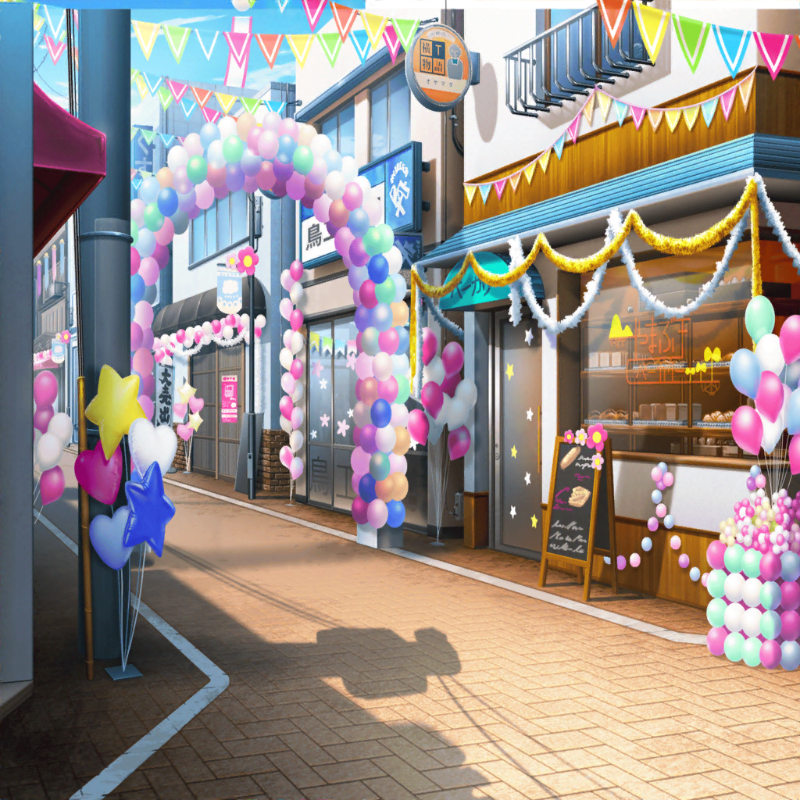

ふわキャラ選手権 会場
ミッシェル
はあ……はあ……やっと……ゴール……
こころ
ミッシェル〜〜！！ お疲れさまっ！ ステキだったわよ！
ミッシェル
うっ……ちょっと……めちゃくちゃ疲れてるから……
今は抱きつかないで……はあ……はあ……
薫
素晴らしい走りだったよ、ミッシェル……！
途中、走るのを中断した時はどうなるかと思ったけれど……
花音
あの時、マリーと何か話してるように見えたけど、
何を話したの？
ミッシェル
ああ、それはね……
マリー
ミッシェル〜！！
ミッシェル
はぐみ！
こころ
あら……！？
あら、あら……！？ あなたは、はぐみ！？
それとも、マリー！？
薫
顔は確かにはぐみだが、マリーと同じ服を着ているね。
これは一体……！？
マリー
こころん、薫くん。
実はね……
薫
なるほど。それではぐみは、商店街のためにマリーという役を
演じていたわけだね
こころ
そうだったのね。あたし、全然気がつかなかったわ。
はぐみ、演技の才能がすごくあるのね
はぐみ
はぐみ、人間だけどふわキャラのフリをしてたんだ。
２人共、風邪なんて嘘ついてごめんね……
ミッシェル
あ……
ミッシェル
（あたしが変な気を使ったせいだ……）
こころ
はぐみが謝ることなんてひとつもないわ！
はぐみはきっと、あたし達にサプライズを
くれようとしていたのよね
薫
素晴らしい演技だったよ、はぐみ！
この私が気づかないほど、完璧なマリーだったよ
ミッシェル
（あたしのことにも気づいてないくらいだからね、
薫さんは……）
ミッシェル
はぐみ、ごめんね
はぐみ
えっ？ どうしたの、ミッシェル？
ミッシェル
はぐみがせっかく、正々堂々やろうって言ってくれたのに、
変に気を使っちゃったり、途中で諦めようとしちゃったり……
ミッシェル
正々堂々真剣勝負が大事だって、その……
美咲ちゃんから教えてもらった事、だよね？
はぐみ
ミッシェル、知ってたんだね！
うん、そうだよ！ みーくんが教えてくれたことなんだ。
その言葉にはぐみ、すっごく助けられたんだ
はぐみ
はぐみの大切な人にはこの言葉、伝えていきたいって
思ってて……だからミッシェルもこの言葉、知っててうれしい！
ミッシェル
あはは……ありがとう、はぐみ
ミッシェル
（あたしが言った言葉、そんなに大切にしてくれてたんだ。
なのにあたしはその言葉、全然活かせてなくて……
これは、反省だな〜……）
こころ
マリーもミッシェルも、とっても一生懸命でステキだったわよ！
そのステキな言葉のおかげね！ 美咲にもありがとうって
言わなくちゃ
ミッシェル
うん……伝言しとくよ
ミッシェル
（選手権の結果は、マリーが優勝になるのかな。
まあ、そうだよね。あれだけ一生懸命、真剣勝負したんだから）
司会
ふわキャラ選手権、総合点の集計が終了しました。
それでは……結果発表です！！！
花音
きた……っ！
司会
１位は……花咲川代表、マリー・アンドロメダ！！！
こころ
やったわ！ はぐみ、おめでとうー！
司会
そして同率１位は……同じく花咲川代表、ミッシェル！！！
ミッシェル
えっ……えっ！？
薫
ああっ……！ ミッシェル！ おめでとう！
司会
続いて、第２位は……
マリー
ミッシェル〜！！ やったね！ １位だよっ！
ミッシェル
あはは、ありがと。マリーのおかげだね。
……で、優勝したら何が……
エージェント
素晴らしいっ！ 素晴らしかったですよ、おふたりとも！
ミッシェル
うわ、急に出てきた
エージェント
選手権の様子、拝見していました。どの種目もとても
素晴らしかったですが、最後のマラソンは特に感動しましたよ！
ミッシェル
ど、どうも……
エージェント
マリーがミッシェルを励まし、ゴールを目指す様子は
もう涙なしでは見られませんでした。そこで私はこう思いました
エージェント
これからも、マリーとミッシェルが手を取り合い、
共に花咲川を盛り上げる姿が見たい……と
薫
２人はよき友人であり、よきライバル……というわけだね。
素晴らしい、最高だよ！
こころ
あたしも賛成よ！
ミッシェルにお友達が増えてとってもうれしいわ！
マリー
そういうことならこれからもはぐ……じゃなくて、
マリーとしてもがんばるよ！
たえ
マリー、もっと人気者になって
ここのつぎはぎ、直そうね
ミッシェル
うわっ、なんで花園さん達まで！？
香澄
せっかくなら、マリーのテーマソング、作らない！？
私、作りたいっ！
こころ
いいわね、香澄！ あたし、早速歌詞を考えてみるわ！
ミッシェル
なにこれ、どういう状況……！？
せっかく、いい感じにおさまりそうだったのに……
有咲
奥沢さん……それに花音先輩も。
一緒に、このあとのこと相談させてください。
なんか、歌作るとか言ってるんで
ミッシェル
市ヶ谷さんも流れにのまれすぎでしょ！？
……って、もうこの状況じゃ仕方ないか。
ああもう、あたし、ちょっと着替えてきまーす！